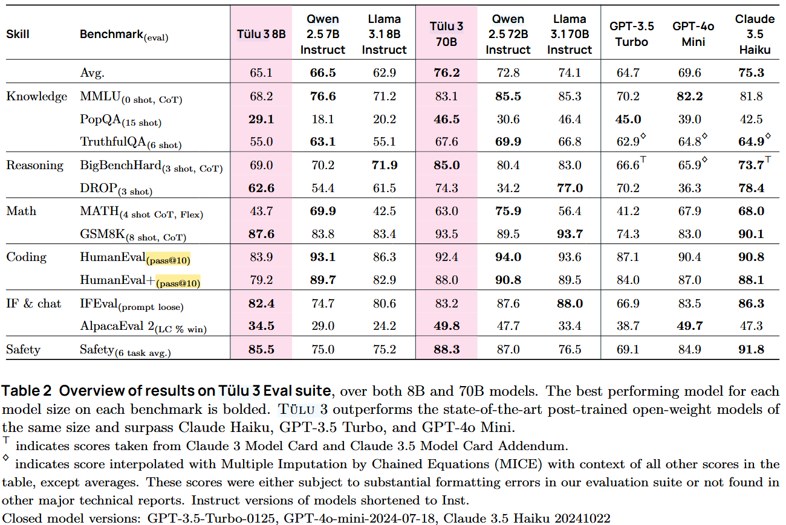

from math import comb
import numpy as npWhat is pass@k evaluation metric?
Pass@k
Introduction
After training large language models (LLMs), we want to know how good it is. Many benchmakrs use pass@k metric. But what does it mean? In this blog, we will learn about what pass@k means. We will focus on evaluting in coding ability.
When looking at the benchmarks for coding, we see HumanEval with pass@1 or pass@10. As you can see below, this is an evaluation benchmark from Tulu3 by Lambert et al.

Tulu3 evaluation benchmark with HmanEval using pass@10.
Intuition behind formula
Let’s first think about how how we could evaluate our fresh LLM. We could let our model generate code by providing pseudocode as input and comapre the code with the actual working code we wrote ourselves. However, code can be written many different ways that does the same thing, and this does not account for that. Another way we can evaluate our model is to give our LLM a documentation string as an input and let it generate code. Then, we run tests on the generated code for correctness. This way, as long as the code passes tests, we count them as correct. This is a more robust way to evaluate models, which is how Chen et al. did in “Evaluating Large Language Models Trained on Code”. HumanEval evaluation set is also from this paper.
Since we have a way to mark code samples as correct, we need a way to calculate the score. There are different ways to do this. Kulal et al. suggested using pass@k metric. This generates k code samples per problem. If any sample passes the unit tests, the LLM gets a score. For the total score, it is the percentage of correct problems out of total problems.
This simple way has a problem as it has a high variance. When k is 1, we generate 1 sample and the model can sometimes get it right, sometimes not because there is randomness when the models generate responses.
Chen et al. suggeted another pass@k metric. They generate n samples (where n >= k) per problem. In the paper, they used n=200 and k <= 100. From these samples, they count c, where c is the number of samples that pass unit tests. From this, they calculate the new pass@k defined as the following:
\[ \text{pass@k} := \underset{\text{Problems}}{\mathbb{E}} \left[ 1 - \frac{\binom{n-c}{k}}{\binom{n}{k}} \right] \quad (1) \]
This also makrs code samples as correct if any sample passes the unit tests, but calculation is different. Let’s take a look at it in more detail.
When I first looked at this, I had no idea what it meant. The \({\mathbb{E}}\) means take the expectation of, which is the same thing as average. So we are taking the average of problems. Inside the bracket applies to each problem. Now let’s look at \(\binom{n}{k}\), which is n choose k. This is an expression for combiantions. If it has been a long time since you encountered this, take a brief review from khan academy. If you remember permutations, order matters for permutations, and order does not matter in combinations. And to calculate, we use the following:
\[ \binom{n}{k} = \frac{n!}{k!(n-k)!} \]
Intuitively, we can think of the pass@k equation as the following:
- \({\binom{n}{k}}\): From n samples, how many different ways can we choose k samples?
- \({\binom{n-c}{k}}\): Out of all the incorrect samples (n-c), how many ways can we choose k samples?
Therefore, the following fraction,
\[\frac{\binom{n-c}{k}}{\binom{n}{k}}\]
represents the probability of choosing all the wrong samples when choosing k samples from n samples.
By applying 1 - in front of the fraction, we are taking the complement of this. Complement of all wrong samples means at least one sample is correct. Therefore the expression,
\[\left[ 1 - \frac{\binom{n-c}{k}}{\binom{n}{k}} \right]\]
represents the probability of choosing at least one sample that is correct. We are using complement of a set to calculate the probability because it is easier to calculate it this way. Remember the part inside of bracket only applies for one problem. And we do this for all the problems and take the average to get pass@k.
Therefore, if we increase the number of samples we pick (k), the score increases.
Calculating metric
Let’s do something more hands on. When we have n = 200 and k = 1, how would it look like? Let’s use python to calculate it. With Python 3.8+, we can calculate combination with math.comb.
From 200 samples, there are 200 ways to choose 1 sample.
comb(200, 1)200If we set k = 2 and choose 2 samples, there are more ways to choose.
comb(200, 2)19900If we are choosing 100 samples, there are so many ways to do so.
comb(200, 100)90548514656103281165404177077484163874504589675413336841320And if we want to choose 199, there are 200 ways.
comb(200, 199)200And if we want to choose 200 out of 200, there is only one way to do it.
comb(200, 200)1We can calculate pass@k and see how the evaluation score changes based on number of correct samples, c, and k.
def pass_at_k(c, k=1, n=200): return 1 - (comb(n-c,k) / comb(n,k))pass_at_k(0)0.0pass_at_k(1)0.0050000000000000044pass_at_k(10)0.050000000000000044pass_at_k(100)0.5pass_at_k(200)1.0What happens if k is 10?
pass_at_k(0, k=10)0.0pass_at_k(1, k=10)0.050000000000000044pass_at_k(10, k=10)0.40854786608141713pass_at_k(100, k=10)0.9992289739372822pass_at_k(200, k=10)1.0The bigger k value yields bigger score for the metric.
How about k is 100?
pass_at_k(0, k=100)0.0pass_at_k(1, k=100)0.5pass_at_k(10, k=100)0.9992289739372822pass_at_k(100, k=100)1.0pass_at_k(200, k=100)1.0What would happen if we make more samples? Create more samples while leaving k is pretty much same as decreasing k. Therefore, the score gets low.
pass_at_k(0, k=100, n=500)0.0pass_at_k(1, k=100, n=500)0.19999999999999996pass_at_k(10, k=100, n=500)0.8950489654316426pass_at_k(100, k=100, n=500)0.9999999999890197pass_at_k(200, k=100, n=500)1.0Here is another pass_at_k which is more numerically stable. This came from the Chen et al.
def pass_at_k(c, k=1, n=200):
if n - c < k: return 1.0
return 1.0 - np.prod(1.0 - k / np.arange(n - c + 1, n + 1))We get the same result.
pass_at_k(1)0.0050000000000000044Conclusion
In this blog, we looked at how pass@k is calculated using a method provided by Chen et al. This way is less finicky than the method suggested by Kulal et al.
To learn more about pass@k, here are the papers:
- SPoC: Search-based Pseudocode to Code by Kulal et al.: https://arxiv.org/abs/1906.04908
- Evaluating Large Language Models Trained on Code (also HumanEvals) by Chen et al.: https://arxiv.org/abs/2107.03374
If you want to learn more about proabaility and statistics:
- Stat110 by Joe Blitzstein in Harvard: https://stat110.hsites.harvard.edu/. This goes more in depth into sets, proofs, distributions, etc. It has lecture videos and homeworks. This is math and theory heavy.
- A Concrete Introduction to Probability (using Python) by Peter Norvig: https://github.com/norvig/pytudes/blob/main/ipynb/Probability.ipynb. This is more hands on approach using python.